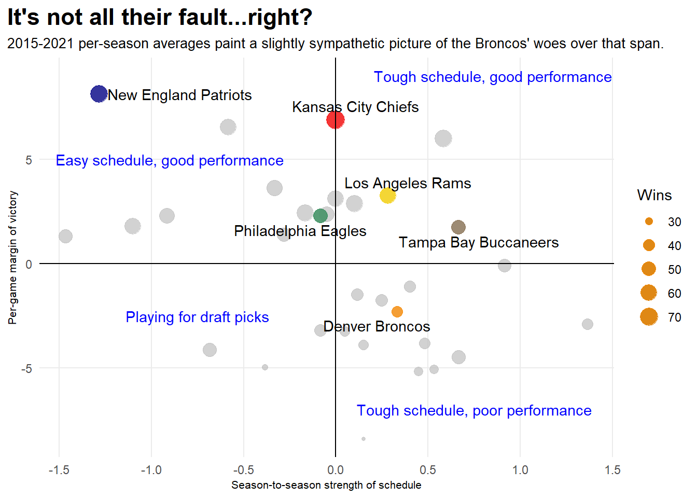

Why the Denver Broncos have been so bad since winning Super Bowl 50
football
nfl
analysis
Author
Sawyer Belair
Published
December 4, 2022
To anyone who regularly watches the NFL, it’s a painfully obvious reality that the Denver Broncos have been a pitiful team backed by an utterly dysfunctional front office ever since their masterpiece finish to the 2015 season.
But why, exactly, have the Broncos been so god-awful over the course of the past 6 years? As a self-loathing lifelong Broncos fan, I set out to answer this simple question.
After two trips to the Super Bowl in a 3 year span, and cultivating a reputation as one of the league’s perennial title contenders in the early, Denver has missed the playoffs in 6 (and soon to be 7) consecutive seasons, and seems utterly incapable of escaping its endless struggle to draft talent at the quarterback position, despite a brief 4-season pause on the issue with Hall-of-Famer Peyton Manning under center.
Whether this more recent episode is because of president of football operations John Elway’s obsession with tall, but not necessarily skilled, signal callers, a run of bad luck, or the sheer cruelty wrought upon this organization by the football gods, the team’s QB struggles have translated into an offense that is middling at best despite often being stocked with stud players like wide receivers Courtland Sutton and Jerry Jeudy and 2020 2nd- Team All-Pro tackle Garrett Bolles.
All of this has happened while the Broncos often boast one of the premiere defensive squads in the league, a fact which played a large role in the team’s brutal 24-10 slogging of the 17-1 Panthers in Super Bowl 50, and which has likely been the only thing keeping the team from descending into “2017 0-16 Cleveland Browns” levels of hopelessness.
This inconsistency can easily be visualized by looking at Pro Football Reference’s Simple Rating System, which takes into account a team’s point differential and strength of schedule to produce a context-independent ranking for every team’s offense, defense, and overall effectiveness, with 0.0 denoting a completely mediocre team, positive values being good and negative values being, well, negative.
Let’s take a look at the Offensive Simple Rating System for each of past Super Bowl winners since 2016.
Going in, I was expecting to see a constantly fluctuating line for the Bronco offense, but I was surprisingly mistaken. As we can see, there are no fits and spurts of offensive brilliance from Denver, even during their 2021 season that, despite a handful of narrow losses, left many fans hopeful for 2022 (no comment).
Instead, the offense just gets progressively worse with every year that drags on, begging to be put out of its misery by Broncos GM George Patton. Boy can I relate.
But surely that vaunted defense of Denver’s, once dubbed the “No Fly Zone” by league menace and former Broncos cornerback Aqib Talib, has given a more definitive showing of itself over the past half-decade?
Aaaand I was wrong again. Perhaps most horrifying of all, the numbers seem to suggest that the Broncos D hasn’t been much better than the notoriously squishy Chiefs defense. Don’t even get me started on the Patriots, who’ve led the league in average Defensive Simple Rating System since 2015 with a whopping 4.2 to Denver’s 5th-ranked 1.9 and the Chiefs in 9th at 1.2.
Moving on as I force the pain down, we take a closer look at the Broncos’ cumulative point differential over the past 8 seasons.
A notably agonizing aspect of the Broncos’ seemingly inevitable struggles since Super Bowl 50 has been their strong performance in the first several games of many seasons. Most notably, the team made strong showings to start the 2016, 2017 and 2021 seasons, and I was curious to see how their ability to run up the score on their opponents diminished over the course of each season as the schedule wore on.
Code
years <-2015:2022pdbroncos <-tibble()for (i in years){url <-paste0("https://www.pro-football-reference.com/teams/den/", i, ".htm")stats <- url %>%read_html() %>%html_nodes(xpath ='//*[@id="games"]') %>%html_table(header=FALSE)stats <- stats[[1]] %>%rename(Week=X1, TmScore=X11, OppScore=X12) %>%filter(Week !="Week"& TmScore !="Score"& TmScore !="") %>%select(-starts_with("X")) %>%mutate_at(vars(-Week), as.numeric) %>%mutate(PD = TmScore - OppScore) %>%mutate(cumPD =cumsum(PD)) %>%mutate(Year = i)pdbroncos <-bind_rows(pdbroncos, stats)Sys.sleep(2)}pdbroncos <- pdbroncos %>%mutate(Week =as.numeric(Week)) %>%filter(Week >0) %>%mutate(Year =as.character(Year))pd2015 <- pdbroncos %>%filter(Year ==2015)pd2016 <- pdbroncos %>%filter(Year ==2016)pd2017 <- pdbroncos %>%filter(Year ==2017)pd2018 <- pdbroncos %>%filter(Year ==2018)pd2019 <- pdbroncos %>%filter(Year ==2019)pd2020 <- pdbroncos %>%filter(Year ==2020)pd2021 <- pdbroncos %>%filter(Year ==2021)pd2022 <- pdbroncos %>%filter(Year ==2022)ggplot() +geom_hline(aes(yintercept=0)) +geom_step(data = pdbroncos, aes(x = Week, y = cumPD, group = Year, color = Year)) +scale_color_manual(values=c("darkorange1", "dark blue", "tan", "deeppink1", "orchid4", "lightslateblue", "springgreen2", "mediumturquoise", "black")) +labs(title ="Consistency is key",subtitle ="Despite a few hot starts in 2016, 2017 and 2021, the Broncos tend to lose steam by the halfway point.",x ="Week",y ="Cumulative point differential",color ="Season" ) +theme_minimal() +theme(plot.title.position ="plot",plot.title =element_text(size =17, face ="bold"),axis.title =element_text(size =8), plot.subtitle =element_text(size=10), panel.grid.minor =element_blank() )
Ouch. That 2021 line hurts even now, and it’s telling of just how much potential that team had, starting the season 3-1 only to go on a 4-game losing streak that, despite a late-season rally, they never truly recovered from. There’s a whole lot of seasons on here that don’t even warrant discussion, but as we can see, the Broncos have a penchant for starting the season strong just to blow it all away with ease by the middle of the season.
But surely there’s an explanation for the Broncos’ struggles beyond mediocre quarterback play, an inconsistent defense and lackluster discipline, you say? Good god, I hope so.
Let’s take a look at the other metric that factor into our Simple Rating System scores; strength of schedule.
As it suggests, strength of schedule determines the average quality of opponents a team faced in a given season was based off of the combined winning percentages for every team it faced that season. We’ll also look at the average per-game margin of victory for the Broncos and every other team in the league since 2015.
Code
ggplot() +geom_point(data=nflsumd, aes(x=SoSav, y=MoVav, group=Tm, size=wins), alpha=.7, color="gray") +geom_point(data=kcsumd, aes(x=SoSav, y=MoVav, size=wins), alpha=.75, color ="red") +geom_point(data=nesumd, aes(x=SoSav, y=MoVav, size=wins), alpha=.75, color ="dark blue") +geom_point(data=larsumd, aes(x=SoSav, y=MoVav, size=wins), alpha=.75, color ="gold") +geom_point(data=phisumd, aes(x=SoSav, y=MoVav, size=wins), alpha=.75, color ="sea green") +geom_point(data=tbsumd, aes(x=SoSav, y=MoVav, size=wins), alpha=.75, color ="burlywood4") +geom_point(data=densumd, aes(x=SoSav, y=MoVav, size=wins), alpha=.75, color ="dark orange") +geom_vline(xintercept =0) +geom_hline(yintercept =0) +geom_text(aes(x=0.85, y=9, label="Tough schedule, good performance"), color="blue") +geom_text(aes(x=-0.9, y=5, label="Easy schedule, good performance"), color="blue") +geom_text(aes(x=0.75, y=-7, label="Tough schedule, poor performance"), color="blue") +geom_text(aes(x=-0.75, y=-2.5, label="Playing for draft picks"), color="blue") +geom_text_repel(data=teamsumd, aes(x=SoSav, y=MoVav, label=Tm), box.padding = .35 ) +labs(title ="It's not all their fault...right?",subtitle ="2015-2021 per-season averages paint a slightly sympathetic picture of the Broncos' woes over that span.",x ="Season-to-season strength of schedule",y ="Per-game margin of victory",size ="Wins" ) +theme_minimal() +theme(plot.title.position ="plot",plot.title =element_text(size =17, face ="bold"),axis.title =element_text(size =8), plot.subtitle =element_text(size=10), panel.grid.minor =element_blank() )

Whether or not you’re a homer, you really do have to feel bad for the Broncos here. They’ve had the misfortune of sharing a division with the Chiefs, who have gone 13-0 against them since the former’s last Super Bowl win, and the two free wins they’re giving away every season might even have been enough in some years to get them into the playoffs if they’d been able to lock them down instead. But then again, not every team can skate to playoffs off 4-6 free wins every season like the Patriots have over the near-entirety of the 2010s (I’ll let the numbers speak for themselves here).
Let’s not beat around the bush, though. The Broncos have been bad, really bad, and even an unforgiving schedule doesn’t discount just how dysfunctional they’ve been. Look no further than the absolute butt-fumble of a season the team has produced with Russell Wilson at the helm and first-time head coach Nathaniel Hackett twiddling his thumbs on the sidelines. The offensive numbers are worse than ever, with the team currently ranking dead last in the league in scoring offense at a gag-inducing 13.8 points per game, a whole 2 points less than the next worst offensive attack led by the Houston Texans.
So, Broncos fans, when you find yourself feeling down, desolate and utterly hopeless about the future prospects of this team, just remember one thing: at least we have the Denver Nuggets.